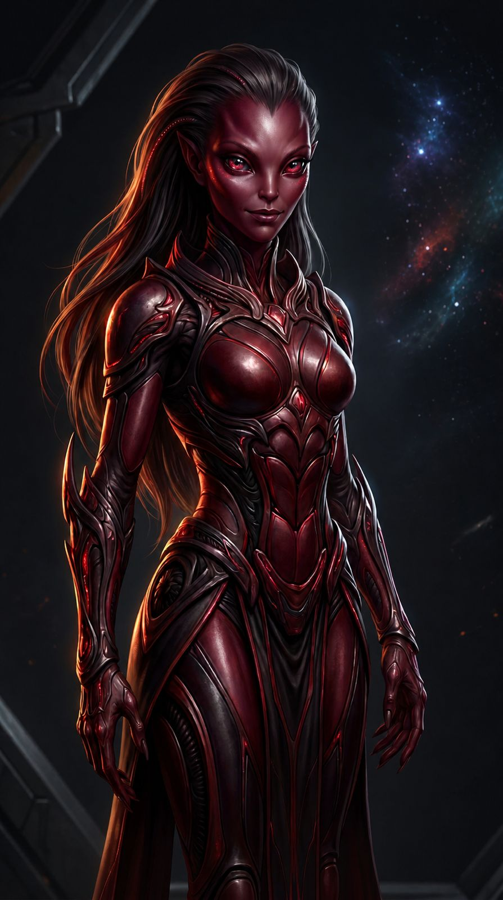

ValAst — El Elegido
Raza: Gris Adaptado
Altura: 2.08 m
Edad: Desconocida
Rol: Mediador / Cambiador
Cree en el bien incluso cuando el mundo no. Cuestionó todo lo que conocía y terminó atrapado entre dos verdades manipuladas.

AkiR — La Portadora del Juicio
Raza: Roja Influyente (variante Zguat ígnea)
Altura: 1.96 m
Edad: Desconocida
Origen: Linaje de JaFran
Rol: Ejecutora Ígnea / Portadora del Juicio
Filosofía:
El fuego revela la verdad: purifica o consume.